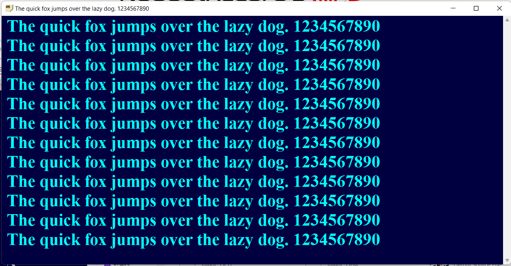
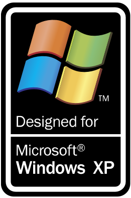

...::: Ivan Movchan's Website :::...
Sample Text
Sticky95
Приложение "Заметки" для Windows 9x. Один из моих старейших проектов, который забрасывался, замораживался, процветал и восстанавливался не один миллиард раз.

Идея данного проекта у меня возникла в 2020 году, когда я захотел опробовать возможности Delphi 7 на своём новом компьютере, да и просто захотелось написать какую-нибудь фигню, которая всем будет интересна :)
В то время проект назывался Notes95. Первый прототип программы вышел в том же 2020 году. К сожалению (или к счастью?), он был утерян вместе со своими исходными кодами.
Под самый Новый 2008 2022 год я попытался возродить проект под именем StickyXP. Но спустя некоторое время проект снова был заброшен. И только в новом 2022 году началась более-менее активная разработка проекта Sticky95.
Программа имитирует UWP-приложение "Заметки" из современной Windows, но в другом (Win32) формате - отсюда и число 95 в названии программы (то есть программа совместима со старыми версиями ОС Windows). Поддерживает английский и русский языки интерфейса, мало весит и нетребовательна к системным ресурсам.
В принципе, это всё, что я могу о ней рассказать))))))))))))))
• Версия 1.0 от 24 апреля 2022 года

Copyright © Ivan Movchan, 2021 - 2022. Рекомендуется включить JavaScript в вашем браузере для лучшего eXpErIeNcE.
Электронная почта автора: gogol2k7 at gmail dot com. Powered by GitHub